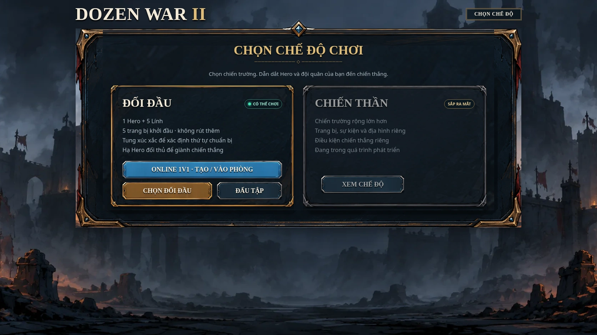
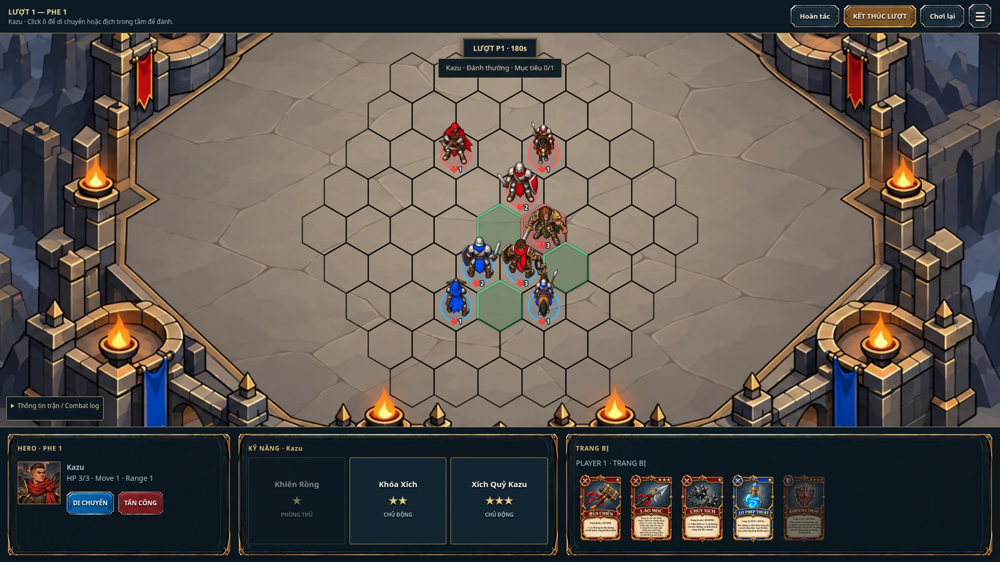
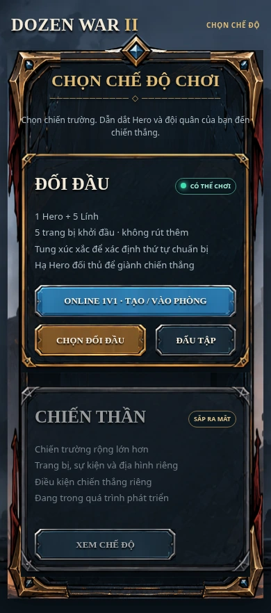

Đối chiếu UI · v1.72.1
Bản sửa artwork và tỷ lệ. Chưa khớp 100% toàn bộ concept. Ảnh “trong game” dưới đây là ảnh chụp trình duyệt của bản chạy thật.
Mở game v1.72.1 · Xem toàn bộ concept đã chốt
Đã dùng trực tiếp artwork gốc cho khung, nút vàng/xanh/sắt, nút di chuyển/tấn công và khung thanh dưới. Đã sửa tỷ lệ màn Chọn chế độ. Chữ và nút vẫn hoạt động trong game.
Còn khác: font chữ, ảnh nền, chi tiết trang trí, khoảng cách và bố cục của các màn còn lại. Ảnh concept có dải UI kit ở dưới; dải này là bảng thành phần thiết kế, không nằm trong giao diện chơi.
Chọn chế độ
Concept gốc · 1672 × 941 px, bao gồm UI kit Game thật · desktop 1672 × 941 px
Game thật · desktop 1672 × 941 px
Trong trận
Concept HUD gốc · có dải UI kit phía dưới Game thật · desktop 1920 × 1080 px
Game thật · desktop 1920 × 1080 px
Chọn chế độ · mobile
Viewport 390 × 844 px. Ảnh chụp toàn trang có chiều cao lớn hơn viewport vì menu cuộn dọc.
